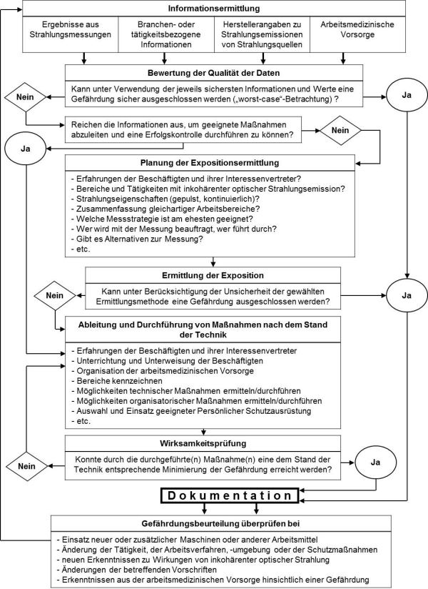

(1) Bei der Beurteilung der Arbeitsbedingungen hat der Arbeitgeber zunächst festzustellen, ob die Beschäftigten inkohärenter optischer Strahlung ausgesetzt sind oder ausgesetzt sein können. Ist dies der Fall, hat er alle hiervon ausgehenden Gefährdungen für die Gesundheit und Sicherheit der Beschäftigten zu beurteilen.
(2) Die Gefährdungsbeurteilung bei inkohärenter optischer Strahlung umfasst insbesondere:
(3) Diese TROS IOS ermöglicht auch ein vereinfachtes Vorgehen bei der Gefährdungsbeurteilung. Dies kann der Fall sein, wenn
(4) Entsprechend dem Ergebnis der Gefährdungsbeurteilung (siehe Abbildung 1) hat der Arbeitgeber Schutzmaßnahmen nach dem Stand der Technik festzulegen (siehe dazu auch TROS IOS, Teil 3 "Maßnahmen zum Schutz vor Gefährdungen durch inkohärente optische Strahlung") und deren Wirksamkeit zu überprüfen.

| Abb. 1 Beurteilung der Arbeitsbedingungen bei Expositionen gegenüber inkohärenter optischer Strahlung |
(1) Aus physikalischen Gründen tritt immer und überall optische Strahlung auf, und zwar als Wärmestrahlung. Auch die Wände von Räumen mit einer üblichen Raumtemperatur von 20 °C bis 25 °C und Menschen mit einer normalen Hauttemperatur von etwa 32 °C senden und empfangen eine schwache Wärmestrahlung. Diese Hintergrundstrahlung ist aber im Rahmen der Gefährdungsbeurteilung nach § 3 OStrV ebenso wenig wie die Strahlung anderer schwacher Strahlungsquellen zu betrachten, weil von ihr keine Gefährdung ausgeht. Es gibt Expositionen gegenüber inkohärenter optischer Strahlung an Arbeitsplätzen, von denen man annehmen kann, dass sie im Rahmen der fachgemäßen Installation und bestimmungsgemäßen Verwendung nur gering sind und dass in jedem Fall die Expositionsgrenzwerte nach Abschnitt 5 der TROS IOS, Teil 2 "Messungen und Berechnungen von Expositionen gegenüber inkohärenter optischer Strahlung" eingehalten werden. Dazu gehören beispielsweise Expositionen durch
Solche Strahlungsquellen strahlen so schwach, dass für den Betrachter keiner der festgelegten Expositionsgrenzwerte erreicht wird; siehe dazu zum Beispiel die Stellungnahme der Strahlenschutzkommission [13]. Spezielle Arbeitsplätze mit hohen Beleuchtungsstärken sind gesondert zu betrachten.
(2) In einer Gefährdungsbeurteilung nach § 3 OStrV können Expositionen gegenüber inkohärenter optischer Strahlungsquellen, die nur gering sind, durch ein vereinfachtes Verfahren berücksichtigt werden. Dies geschieht dadurch, dass man sich zu Beginn der Gefährdungsbeurteilung überlegt, durch welche Strahlungsquellen am Arbeitsplatz diese geringen Expositionen erzeugt werden. Sind nur Expositionen am Arbeitsplatz durch o. g. Quellen vorhanden (z. B. am Büroarbeitsplatz), dann reicht als Ergebnis eine Bemerkung in der Dokumentation, dass keine Gefährdung nach OStrV vorliegt. Die Form der Dokumentation und die Aufbewahrungsfrist nach § 3 Absatz 4 OStrV sind dabei zu beachten (Abschnitt 10).
(3) Bei einer Allgemeinbeleuchtung und Arbeitsplatzbeleuchtung, die gemäß ArbStättV und den Vorgaben der Hersteller nach dem Stand der Technik eingerichtet worden ist und bestimmungsgemäß betrieben wird, ist davon auszugehen, dass keine Gefährdung der Beschäftigten durch inkohärente optische Strahlung und insbesondere durch künstliche ultraviolette Strahlung im Sinne der OStrV vorliegt. Danach sind nach der OStrV keine weiteren Maßnahmen zu ergreifen (Plausibilitätsbetrachtung).
(4) Bei dieser Vorgehensweise ist zu gewährleisten, dass das Ergebnis der Abschätzung oder Berechnung der zu erwartenden Expositionen zuverlässig ist. Nur wenn man mit großer Sicherheit vorhersagen kann, dass die zu erwartenden Expositionen unter den Expositionsgrenzwerten liegen, kann die Gefährdungsbeurteilung auf diese Weise durchgeführt und abgeschlossen werden.
(5) Eine vernachlässigbare Exposition ist bei den oben genannten Quellen nur im Rahmen der fachgerechten Installation und bestimmungsgemäßen Verwendung gegeben. Eine Abweichung von diesem Grundsatz kann zu Überschreitungen der EGW führen, wenn
Hinweis:
Der EU-Leitfaden [14] enthält Informationen über sogenannte triviale Quellen, von denen angenommen wird, dass sie bei fachgerechter Installation und bestimmungsgemäßer Verwendung nicht zu einer Überschreitung von Expositionsgrenzwerten führen. Genau genommen sind nach OStrV jedoch nicht die Quellen zu betrachten, sondern die Strahlungsexpositionen, die durch die Quellen erzeugt werden. Bei Anwendung von Strahlungsquellen aus dieser Aufzählung können je nach Anwendungsbedingungen Expositionen auftreten, die nicht mehr vernachlässigbar sind. Beispiele dafür sind gasbetriebene Deckenstrahler oder auch UV-A-Insektenfallen. Die Beispiele aus dem EU-Leitfaden über sogenannte triviale Quellen können daher nicht ungeprüft übernommen werden.
Es gibt Tätigkeiten, bei denen aufgrund vorliegender Informationen sofort abzuschätzen ist, dass ohne die Anwendung geeigneter Schutzmaßnahmen Expositionsgrenzwerte nach Abschnitt 5 der TROS IOS, Teil 2 "Messungen und Berechnungen von Expositionen gegenüber inkohärenter optischer Strahlung" überschritten werden oder werden können. Dazu gehören z. B. das Elektro- und das Gasschweißen. Auch Tätigkeiten mit sehr hoher Wärmestrahlungsbelastung, z. B. an einem Hochofen oder an offenen Metall- oder Glasschmelzen, gehören dazu. In diesen Fällen ergibt die Abschätzung und Bewertung der Expositionen im Rahmen der Gefährdungsbeurteilung, dass eine Gefährdung durch inkohärente optische Strahlung vorliegt. Eine genaue Quantifizierung der Expositionen durch Messungen ist in diesen Fällen nicht nötig. Vielmehr hat der Arbeitgeber nach § 3 Absatz 1 OStrV sofort Schutzmaßnahmen nach dem Stand der Technik festzulegen und entsprechend § 7 Absatz 1 OStrV durchzuführen, damit die Expositionsgrenzwerte eingehalten werden. Die am Arbeitsplatz vorhandenen Gefährdungen und die festgelegten Schutzmaßnahmen sind nach § 3 Absatz 4 OStrV zu dokumentieren. Die Anforderungen an die Form der Dokumentation und an die Aufbewahrungsfristen sind dabei zu beachten (siehe Abschnitt 10).
Hinweis:
Für eine Reihe von Tätigkeiten mit hohen Expositionen gegenüber inkohärenter optischer Strahlung existieren bereits Informationen von Unfallversicherungsträgern (siehe auch Literaturhinweise). Diese können bei der Gefährdungsbeurteilung und der Festlegung der notwendigen und geeigneten Schutzmaßnahmen herangezogen werden. Dies gilt z. B. für die in der TROS IOS, Teil 3 "Maßnahmen zum Schutz vor inkohärenter optischer Strahlung" Anlage 1 genannten folgende Tätigkeiten:
(1) In den Fällen sehr geringer oder sehr hoher Expositionen ist der Aufwand für die Gefährdungsbeurteilung in der Regel begrenzt. Reichen die vorliegenden Informationen nicht aus, um eine Gefährdung der Beschäftigten durch Expositionen von künstlicher optischer Strahlung mit Grenzwertüberschreitung sicher auszuschließen, dann muss der Arbeitgeber nach § 3 Absatz 1 der OStrV den Umfang der Expositionen durch Berechnungen oder Messungen feststellen. Einzelheiten zur Durchführung von Expositionsmessungen werden im TROS IOS, Teil 2 "Messungen und Berechnungen von Expositionen gegenüber inkohärenter optischer Strahlung" beschrieben.
(2) Ergeben Expositionsmessungen oder -berechnungen, dass Expositionsgrenzwerte überschritten werden oder überschritten werden können, dann hat der Arbeitgeber nach § 3 Absatz 1 OStrV Schutzmaßnahmen nach dem Stand der Technik festzulegen und entsprechend § 7 Absatz 1 OStrV durchzuführen. Die am Arbeitsplatz vorhandenen Gefährdungen und die festgelegten Schutzmaßnahmen sind nach § 3 Absatz 4 OStrV zu dokumentieren. Die Ergebnisse der Messungen oder Berechnungen sind gemäß § 3 Absatz 4 OStrV zu dokumentieren und aufzubewahren (siehe Abschnitt 10).
Die vorstehenden Ausführungen zur Gefährdungsbeurteilung am Arbeitsplatz gelten ausschließlich für den Normalbetrieb der Strahlungsquellen. Bei Einrichtvorgängen kann es vorkommen, dass die Strahlungsquellen unter anderen Betriebsbedingungen betrieben werden als im Normalbetrieb und dadurch höhere Strahlungsexpositionen bei Beschäftigten auftreten können. Bei Service und Wartung werden u. U. Schutzeinrichtungen (Einhausungen und Abschirmungen) von den Strahlungsquellen entfernt, was bei den Beschäftigten zu höheren Strahlungsexpositionen als im Normalbetrieb führen kann. Die Ergebnisse von Gefährdungsbeurteilungen für den Normalbetrieb von inkohärenten optischen Strahlungsquellen können daher nicht ohne weiteres auf Einrichtungsvorgänge, Instandhaltungs- und Reparaturarbeiten übertragen werden. Diese Tätigkeiten, die nur von speziell geschultem Personal ausgeführt werden dürfen, sind im Rahmen der Gefährdungsbeurteilung nach OStrV gesondert zu beurteilen.
(1) Der Arbeitgeber ist verpflichtet, Gefährdungen durch indirekte Auswirkungen von inkohärenter optischer Strahlung zu vermeiden. Sind diese nicht zu beseitigen, dann müssen sie so weit wie möglich vermindert werden.
(2) Gefährdungen durch indirekte Auswirkungen infolge vorübergehender Blendung durch sichtbare inkohärente optische Strahlung sind bei der Beurteilung der Gefährdungen zu berücksichtigen.
(3) Vorübergehende Blendung kann auftreten z. B. bei Lampen zur Beleuchtung in und von Gebäuden, Sportanlagen, Bühnen oder Filmsets. Auch Fahrzeuglampen können blenden.
(4) Eine derartige Blendung kann beim Geblendeten eine vorübergehende Verminderung der Sehfähigkeit verursachen. Bei einem Fahrzeugführer kann dies z. B. zum Verlust der Kontrolle über das Fahrzeug und zu einem Unfall mit weitreichenden Folgen führen.
(5) Eine starke optische Strahlung kann unter bestimmten Umständen Stoffe entzünden (Brandgefahr) oder Gas- bzw. Dampfgemische zur Explosion bringen. Dies ist z. B. zu beachten, wenn die Bestrahlungsstärke aus Quellen inkohärenter optischer Strahlung mit Hilfe von Linsen, Spiegeln etc. erhöht wird. In der TRBS 2152 Teil 3 Abschnitt 5.10 werden hierzu detailliertere Aussagen getroffen.
(6) Die Lagerung und Erzeugung von leicht entzündlichen Stoffen und explosionsfähigen Gemischen ist an Arbeitsplätzen mit starken optischen Strahlungsquellen zu vermeiden. Bei der Gefährdungsbeurteilung ist dies zu prüfen (siehe auch TRBS 2152 Teil 3 Abschnitt 5.10). Gegebenenfalls muss weitere Fachkunde eingeholt werden.
(1) Die Einhaltung der Expositionsgrenzwerte gemäß der OStrV reicht zum Schutz der besonders gefährdeten Gruppen nicht in jedem Fall aus. Daher sind die Expositionsgrenzwerte für diese Gruppen nicht immer anwendbar. Für besonders gefährdete Gruppen sind individuell angepasste Schutzmaßnahmen nötig. Sinnvoll ist hierbei eine arbeitsmedizinische Beratung.
(2) Zu den besonders gefährdeten Personengruppen gehören
Hinweis:
Im Hinblick auf die Sicherheit und die Gesundheit von Kindern und Jugendlichen am Arbeitsplatz sind die Vorgaben des Jugendarbeitsschutzgesetzes (JArbSchG) und der Kinderarbeitsschutzverordnung (KindArbSchV) zu berücksichtigen.
Im Hinblick auf die Sicherheit und die Gesundheit von Schwangeren und stillenden Müttern am Arbeitsplatz sind die Vorgaben des Mutterschutzgesetzes (MuSchG) und der Verordnung zum Schutz der Mütter am Arbeitsplatz (MuSchArbV) zu berücksichtigen.
Die Aufnahme bestimmter chemischer Stoffe in den Körper kann die Fotosensibilität von Personen erhöhen. Solche Stoffe können in der Luft am Arbeitsplatz oder auf kontaminierten Oberflächen vorkommen. Ist der zu bewertende Arbeitsplatz möglicherweise mit chemischen Stoffen belastet, ist zu prüfen, ob darunter auch Stoffe sind, die die Fotosensibilität erhöhen. Eine Liste fotosensibilisierender Stoffe ist in der Tabelle 1 wiedergegeben. Treten solche Stoffe am Arbeitsplatz auf, dann kann möglicherweise die Einhaltung der Expositionsgrenzwerte nach OStrV zum Schutz vor Gefährdungen nicht ausreichen. Es sind dann Maßnahmen zu ergreifen, um diese Stoffe vom Arbeitsplatz zu entfernen oder geeignete Ersatzstoffe einzusetzen, die nicht fotosensibilisierend wirken. Ist dies nicht möglich, müssen die Schutzmaßnahmen gegen inkohärente optische Strahlung entsprechend ausgelegt werden.
Stoffe, die die Fotosensibilität erhöhen, können auch in Kosmetika oder Medikamenten enthalten sein. Da der Arbeitgeber Beschäftigte über die Einnahme von Medikamenten oder die Benutzung von Kosmetika nicht befragen darf, ist das Thema im Rahmen der Unterweisung (siehe Abschnitt 7) anzusprechen.
Tab. 1 Liste ausgewählter fotosensibilisierender Stoffe (nach [18])
| Fotoxische Wirkung | Fotoallergische Wirkung |
|
Teer- und Pechbestandteile Polyzyklische KohlenwasserstoffeAnthrazen Fluoranthren Furokumarine in Pflanzen, z. B. Bärenklau, Wiesengräserin ätherischen Ölen, z. B. Bergamotteöl Farbstoff AntrachinonfarbstoffThiazine Methylenblau Toluidinblau Eosin Bengalrot Akridin |
Antimikrobielle Substanzen in Kühlschmierstoffen, Seifen und Kosmetika Halogenierte SalizylanilideHexachlorophen Bithionol Duftstoffe in Seifen und Kosmetika 6-MethylcoumarinAmbrette Moschus Parfüm-Mix UV-Filtersubstanzen in Lichtschutzmitteln Paraminbenzoesäure und -esterBenzophenone Zimtsäureester |
(1) Die Gefährdungsbeurteilung muss entsprechend Abschnitt 3.3 Absatz 6 dieser TROS IOS überprüft und ggf. aktualisiert werden. Auch ohne besonderen Anlass ist eine regelmäßige Überprüfung (etwa einmal jährlich) durchzuführen.
(2) Falls die erneuerte Gefährdungsbeurteilung zu abweichenden Ergebnissen führt, sind die Schutzmaßnahmen anzupassen.